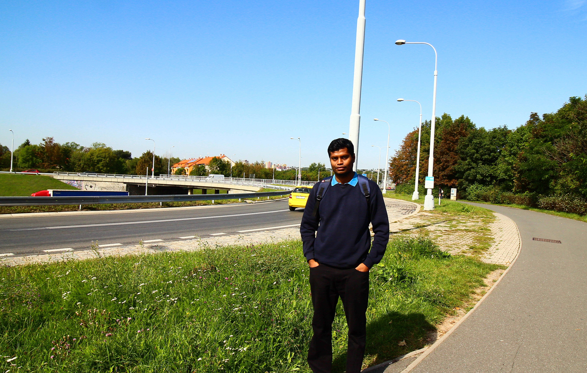

Nirjan Biswas

Picture Courtesy: Ujjal Das
I am a Post Doctoral Fellow at TIFR-Center for Applicable Mathematics. I did Ph.D. in Mathematics from IIT Madras under the supervision of Dr. T. V. Anoop.
Address
Room No: 110
TIFR-CAM, Bangalore 560065, India
Contact No: (+91) 7003044088
Email: nirjan22@tifrbng.res.in, nirjaniitm@gmail.com
Research Interest
Analysis of Semilinear and Nonlinear Elliptic Partial Differential Equations
Hardy-Sobolev Inequalities
Bifurcation Theory
Conference Presentations
On cylindrical and non-cylindrical (p,q)-Hardy potentials, UNC Greensboro PDE Conference Of 2021 (Online), July 24-25, 2021.
On some embeddings and applications, Research meet on Partial Differential Equations: Recent Developments, IIT Gandhinagar, February 13-14, 2020.
Some embeddings and applications, International Conference in Conjunction with 15th Biennial Conference of Indian Society of Industrial and Applied Mathematics, Coimbatore, December 5-7, 2019.
Some embeddings and applications, Małe Ciche 2019, Function Spaces and PDEs, Poland, September 23-27, 2019.
Embedding theorems for unbounded domains, In house Symposium, IIT Madras, October 6, 2018.
Hardy-Sobolev inequalities on the exterior domains, TIFR-CAM, July 5, 2018.
Teaching Experiences
Functions of several variable (IIT Madras)
Series and Matrices (IIT Madras)
Linear Algebra for Engineers (IIT Madras)
Differential Equations (IIT Madras)